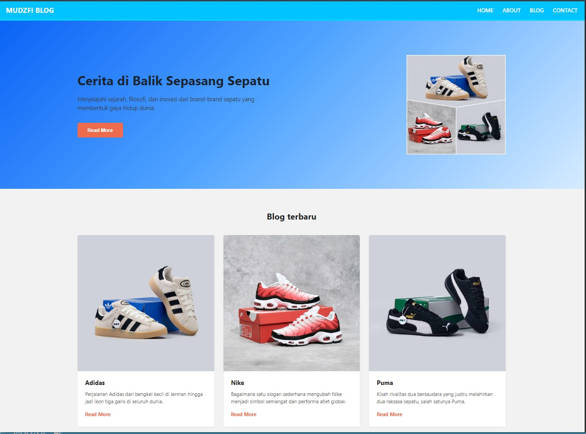

Tampilan SASS Grid
Project website kelas industri yang dibuat untuk membuat tampilan jadi lebih menarik. Project ini membantu saya memahami cara membuat struktur website, mengatur tampilan menggunakan CSS/SASS, serta membuat website yang lebih terstruktur dan mudah digunakan.